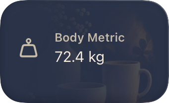
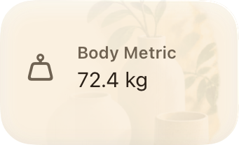
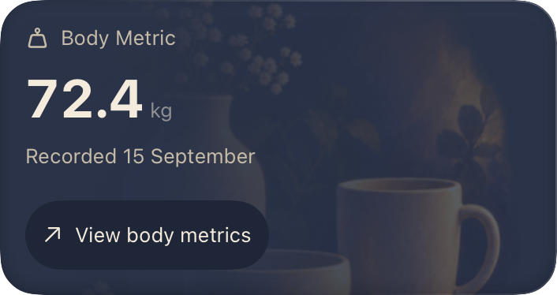
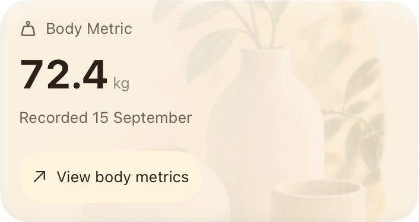
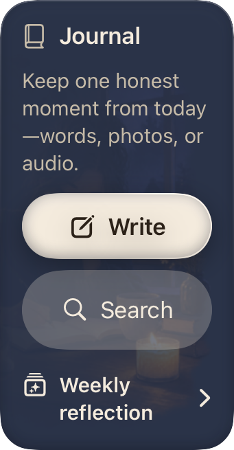
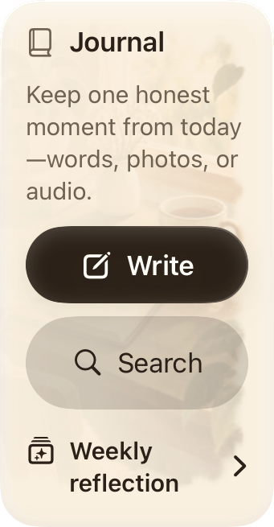
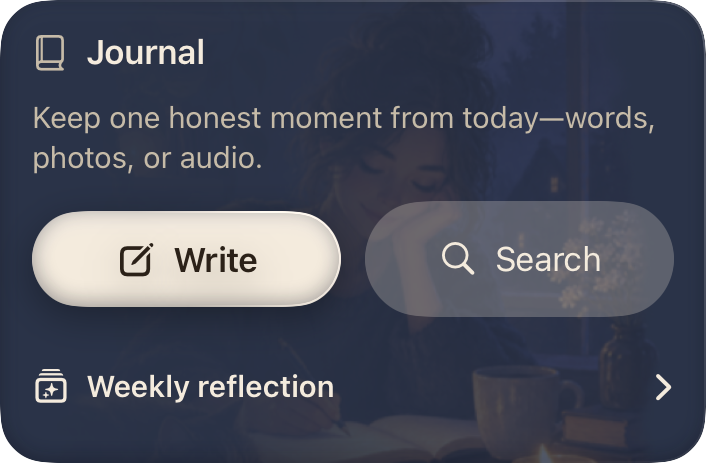
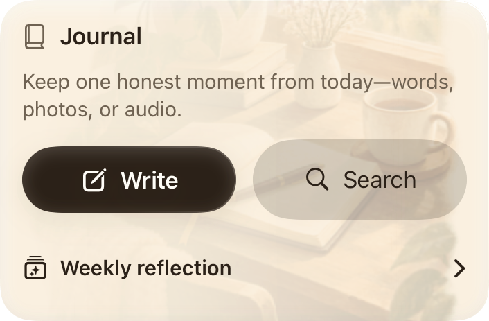
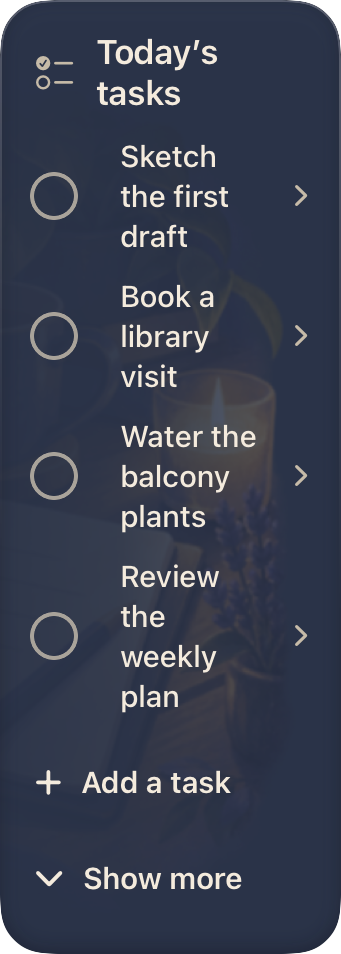
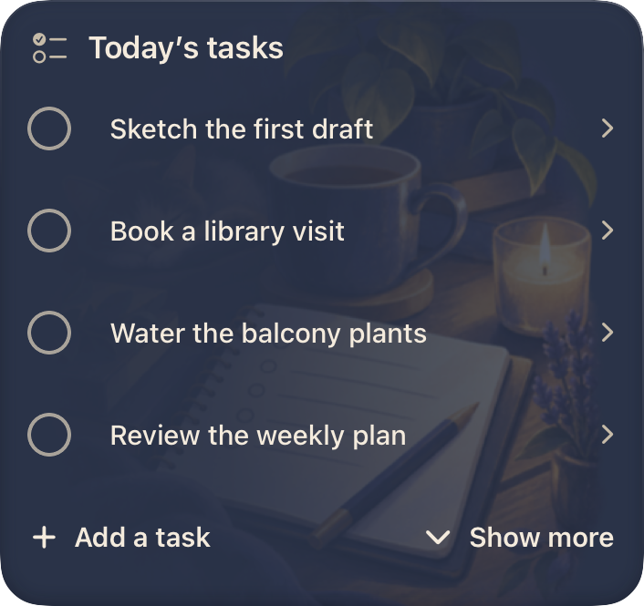
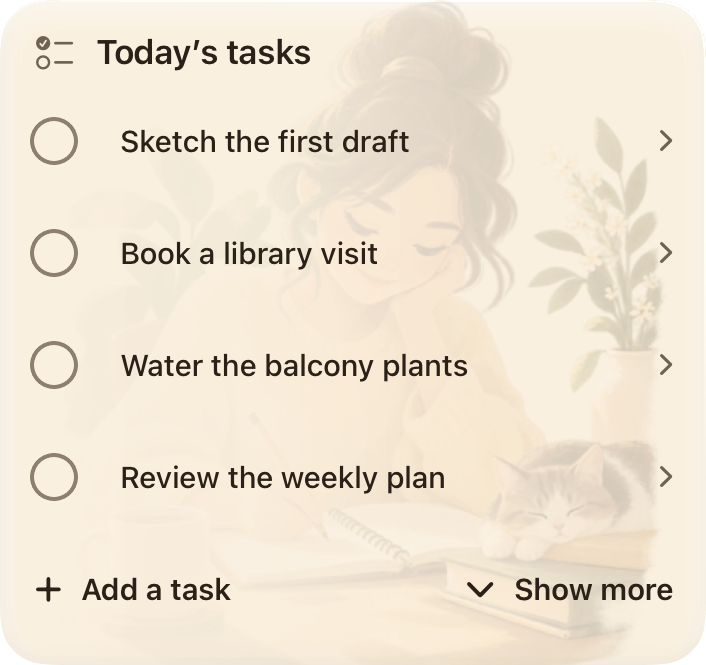
Native SwiftUI, default text size, synthetic data. Artwork does not add height or reserve a reading column. These twelve captures review the new art direction; full catalog acceptance remains pending.










